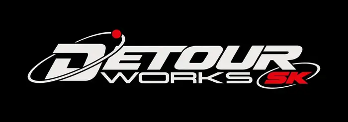

SYS_01
Systémy & softvér
Linux, Windows, macOS, open source, utility softvér, zvláštne nástroje a veci, ktoré sa oplatí nainštalovať.
EXPLORE
SLOVAKIA // TECHNOLOGY / MEDIA / DISCOVERY
Detour Works SK je nezávislá slovenská technologická a mediálna iniciatíva. Objavujeme zaujímavé technológie, skúšame ich v praxi a prinášame ich slovenskému publiku bez marketingovej omáčky.
Detour ide ďaleko za hranice jedného operačného systému alebo typu hardvéru. Zaujímajú nás Linux, Windows a macOS rovnako ako staré počítače, rádiá, open-source softvér, užitočné a zvláštne weby, digitálne nástroje, hardvér, programovanie, nové produkty a technologické slepé uličky.
Chceme ukázať nielen čo technológia je, ale hlavne čo sa s ňou dá robiť. Skúšať, rozoberať, prispôsobovať, porovnávať, opravovať a občas nasledovať rabbit hole len preto, že je zaujímavý.
Linux, Windows, macOS, open source, utility softvér, zvláštne nástroje a veci, ktoré sa oplatí nainštalovať.
EXPLOREStaré počítače, rádiá, periférie, lacný hardvér, opravy, upgrade a pokusy dostať zo starých vecí nový život.
OPEN CASEUžitočné weby, malé internetové projekty, digitálne rabbit holes a miesta, ktoré algoritmus bežne neukáže.
FOLLOW LINKSkripty, malé nástroje, automatizácia, web, experimenty a stavanie vecí namiesto nekonečného čítania o nich.
BUILDRozhrania, workflow, desktop, hardvér a vlastné nastavenia. Počítač nemusí zostať taký, ako prišiel z krabice.
MODIFYNové produkty, AI, vznikajúce nástroje a technológie, ktoré stoja za skúšku — s nadšením aj skepticizmom.
TEST SIGNALSITE STATUS: UNDER CONSTRUCTION / SIGNAL ACTIVE
Vždy existuje ďalší nástroj, ďalší systém, ďalšia stránka, ďalší kus hardvéru alebo úplne iný spôsob, ako niečo urobiť.
Ideme obchádzkou.
Zistíme, čo tam je.
A prinesieme to späť na Slovensko.
Cieľ je jednoduchý: spraviť technológie zaujímavejšie, pochopiteľnejšie a dostupnejšie pre ľudí na Slovensku.
SEND A SIGNAL
Tip na softvér, hardvér, zvláštny web, produkt na otestovanie, spoluprácu alebo jednoducho niečo, čo by sme mali preskúmať.